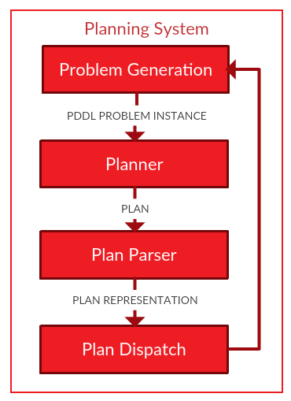

Using the Planning System
The planning system performs the following functions:
- Generates a PDDL problem instance, by fetching the PDDL model from the Knowledge Base.
- Calls the planner.
- Reads and stores the output of the planner.
- Dispatches the plan for execution.
If the plan dispatch fails, then the process can be repeated from step (1). The number of automatic replanning attempts is limited by the parameter max_dispatch_attempts.
Contents:
Starting the planning system
There are five ways of calling the planning system to start the (re)planning process:
- Calling the basic planning system service.
- Calling the planning system service with parameters.
- Sending a planning command on the planning system command topic.
- Sending an action goal to the planning system action server.
- Using a ROSPlan GUI.
Basic planning system service
Topic: /kcl_rosplan/planning_server
Service: std_srvs/Empty
The planning system will begin. The service returns when: the planner fails to find a plan; the dispatch completes successfuly; there are no more replanning attempts; or the planning system encounters an error.
Planning system service with parameters
Topic: /kcl_rosplan/planning_server_params
Service: rosplan_dispatch_msgs/PlanningService
As the basic service. Some launch parameters are overriden by the service request: domain_path, problem_path, data_path, planner_command.
Planning system command topic
Topic: /kcl_rosplan/planning_commands
Message: std_msgs/String, data:="plan"
The planning system will begin.
Sending an action goal to the planning system
Topic: /kcl_rosplan/start_planning/goal
Message: rosplan_dispatch_msgs/PlanActionGoal
Start the planning system as a ROS action. For more information see the actionlib documentation.s
ROSPlan status topic
The status of the planning system is published on the topic: /kcl_rosplan/system_state. The possible values are:
Ready
The planning system is idle, and ready to start planning.
Planning
A problem has been generated and the planner has been called. The planning system is waiting for the planner to finish.
Dispatching
A plan has been generated and is currently under dispatch.
Paused
A plan is currently under dispatch, but no new actions will be dispatched until the planning system is unpaused.
ROSPlan command topic
The planning system can be controlled using string commands published on a command topic.
Topic: /kcl_rosplan/planning_commands
Message: std_msgs/String
The possible commands are:
plan
If it is ready, starts the planning system.
pause
No new actions will be dispatched until the pause command is sent again. When the system is unpaused, any ongoing dispatch will restart.
cancel
No new actions will be dispatched, and the dispatch will return. Note that currently executing actions already dispatched are unaffected.